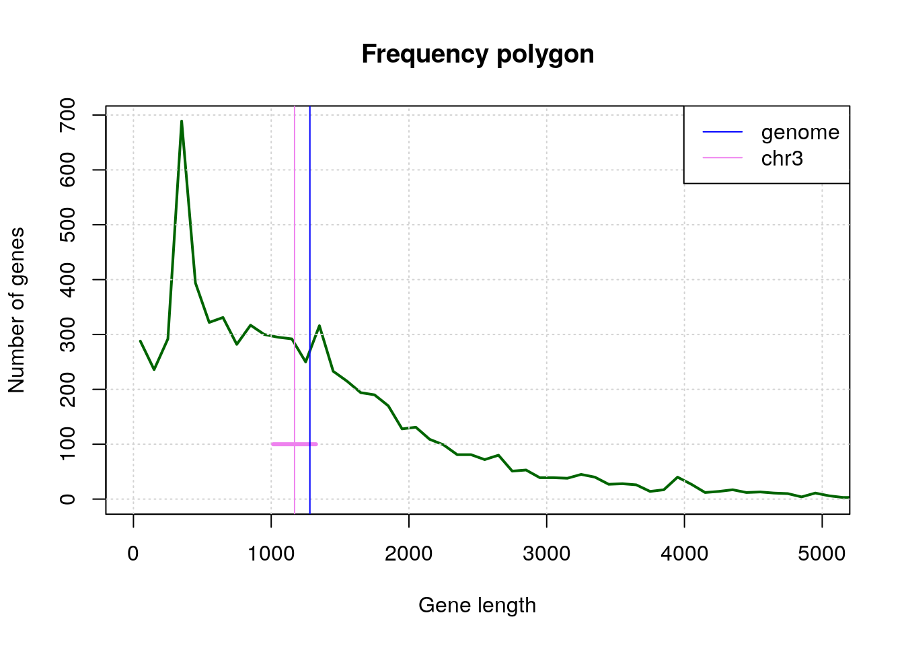

Analyse d’une table d’annotations génomiques
Probabilités et statistique pour la biologie (STAT1)
Jacques van Helden
2019-09-13
But de ce TP
Durant ce TP, vous serez amenés à effectuer les tâches suivantes:
- Manipuler une table de données génomique (les annotations du génome de la levure).
- Sélectionner un sous-ensemble des données en filtrant les lignes sur base d’un critère déterminé (type d’annotation, chromosome).
- Générer des graphiques pour représenter différents aspects liés à ces données.
- Calculer les estimateurs de tendance centrale et dispersion.
- Calculer un intervalle de confiance autour de la moyenne.
Rendu
A la fin du TP, vous déposerez deux fichiers sur Ametice.
- Votre code R.
- Un rapport synthétique qui inclura une présentation des principaux résultats (figures, statistiques descriptives) et votre interprétation.
Attendus pour le code
Le code doit être lisible et compréhensible: donnez à vos variables des noms indiquant explicitement ce qu’elles contiennent.
Le code devra être correctement documenté (le symbole
#en début ou en milieu de ligne indique que le reste de cette ligne est un commentaire).
avant chaque bloc de code, expliquer ce que vous comptez faire, à quoi sert ce bloc de code;
si c’est utile, ajoutez quelques mots de commentaires pour justifier l’approche choisi;
chaque fois que vous déinifissez une variable, ajoutez sur la même ligne un commentaire indiquant ce que cette variable représente.
- Le code doit être tansportable: après l’avoir téléchargé, on doit pouvoir l’exécuter sur une autre machine. Je testerai systématiquement si les fichiers de code peuvent être exécutés sur ma machine. Evitez donc tout recours à des chemins absolus (nous indiquons ci-dessous comment définir des chemins relatifs par rapport à la racine de votre compte).
Attendus pour le rapport d’interprétation
Le rapport doit être synthétique (1 page de texte maximum + autant de figures et tables que vous le désirez).
Chaque question doit être exprimée explicitement avant de présenter les résultats qui y répondent et de fournir l’interprétation de ces résultats.
Chaque figure ou table doit être documentée par une légende permettant à un lecteur naïf de comprendre ce qu’elle représente. L’interprétation des résultats affichés sur une figure ou table se trouvera dans le texte principal (avec une référence au numéro de figure ou table).
Exemple historique: génome de la levure
- 1992: publication du premier chromosome eucaryote complet, le 3ème chromosome de la levure.
- 1996: publication du génome complet.
Sur base des gènes dU 3ème chromosome (échantillon) on peut estimer la taille moyenne d’un gène de levure.
Questions:
La moyenne d’échantillon (chromosome III) permettait-elle de prédire la moyenne de la population (génome complet) ?
Pour répondre à cette quesiton, nous imaginerons que nous sommes revenus en 1992, et utiliserons l’ensemble des gènes du chromosome III (considérés ici comme un échantillon du génome) pour estimer la taille moyenne des gènes pour l’ensemble du génome (la “population” de gènes").
Cet échantillon peut-il être qualifié de “simple et indépendant” ?
Analyse de la longueur des gènes de la levure du boulanger

Distribution of cds lengths for Saccharomyces cerevisiae.
Tutoriel
Avant de passer aux exercices, nous vous montrons ici quelques éléments de base concernant la lecture, la manipulation et l’écriture des tableaux de données avec R.
Le chemin de la maison (manuel)
Nous allons créer un dossier pour ce tuto, en partant de la racine de nore compte.
Première possibilité (rapide mais peu élégant): entrer (manuellement) le chemin de la racine de votre compte dans une variable
dir.home <- /le/chemin/de/ma/maison
- Avantage: rapide et pratique
- Désavantage: non portable, ne fonctionnera que sur votre ordinateur
Le chemin de la maison (automatique)
Une solution plus générale: utiliser la commande R Sys.getenv().
- Invoquée sans paramètre, cette commande liste toutes les variables d’environnement (votre configuration système).
- On peut restreindre l’output à une variable d’environnement donnée, par exemple
Sys.getenv("HOME")retourne le chemin de la racine de votre compte.
Note: écriture équivalente sous Linux: le symbole tilde ~ indique également le chemin de la rachine de votre compte.
## Identify the home directory
## by getting the environment variable HOME
dir.home <- Sys.getenv("HOME")
print(dir.home)[1] "/Users/jvanheld"Création d’un dossier pour le TP
## Define a variable containing the path of the results for this tutorial
dir.tuto <- file.path(dir.home, "stat1", "TP2")
print(dir.tuto)[1] "/Users/jvanheld/stat1/TP2"## Create the directory for this tutorial
dir.create(path = dir.tuto, showWarnings = FALSE, recursive = TRUE)
## Go to the tutorial directory
setwd(dir.tuto)
## List the files already present in the folder (if any)
list.files()[1] "3nt_genomic_Saccharomyces_cerevisiae-ovlp-1str.tab"
[2] "chrom_sizes.tsv"
[3] "Saccharomyces_cerevisiae.R64-1-1.37.gtf.gz" Téléchargement du fichier GTF à partir d’EnsemblGenomes
Astuce: avant de télécharger le fichier d’annotations (GTF) depuis EnsemblGenomes vers notre ordinateur, nous allons vérifier s’il est déjà présent (et dans ce cas on ne le re-télécharge pas).
## Define the URL of the annotation file (GTF-formatted)
gtf.URL <- "ftp://ftp.ensemblgenomes.org/pub/release-37/fungi/gtf/saccharomyces_cerevisiae/Saccharomyces_cerevisiae.R64-1-1.37.gtf.gz"
## Define the path where the local copy will be stored
local.GTF <- file.path(dir.tuto, "Saccharomyces_cerevisiae.R64-1-1.37.gtf.gz")
## If the local file file laready exists, skip the download
if (file.exists(local.GTF)) {
message("GTF file already exists in the tutorial folder: ", local.GTF)
} else {
## Download annotation table in GTF format
download.file(url = gtf.URL, destfile = local.GTF)
}Chargement d’un tableau de données
R comporte plusieurs types de structures tabulaires (matrix, data.frame, table).
La structure la plus couramment utilisée est le data.frame, qui consiste en un tableau de valeurs (numériques ou chaînes de caractères) dont les lignes et les colonnes sont associées à des noms.
La fonction read.table() permet de lire un fichier texte contenant un tableau de données, et de stocker le contenu dans une variable.
Plusieurs fonctions dérivées de read.table() facilitent la lecture de différents types de formats:
read.delim()pour les fichiers dont les colonnes sont délimitées par un caractère particulier (généralement la tabulation, représentée par ").read.csv()pour les fichiers “comma-searated values”.
- Téléchargez le fichier suivant sur votre ordinateur:
- Chargez-le au moyen de la fonction read.table (pour cela vous devez remplacer le chemin ci-dessous par celui de votre ordinateur).
## Read a GTF file with yeast genome annotations
## Load the feature table
feature.table <- read.table(
local.GTF,
comment.char = "#",
sep="\t",
header=FALSE,
row.names=NULL)
## The bed format does not contain any column header,
## so we set it manually based on the description of the format,
## found here:
## http://www.ensembl.org/info/website/upload/gff.html
names(feature.table) <- c("seqname", "source", "feature", "start", "end", "score", "strand", "frame", "attribute")Exploration du contenu d’un tableau de données
La première chose à faire après avoir chargé un tableau de données est de vérifier ses dimensions
[1] 43028 9[1] 43028[1] 9L’affichage du tableau d’annotations complet ne serait pas très lisible, puisqu’il comporte des dizaines de milliers de lignes.
Nous pouvons afficher les premières lignes avec la fonction head().
Note: la dernière colonne est particulièrement lourde (elle contient un tas d’information). Nous verrons plus loin comment sélectionner un sous-ensemble des colonnes pour alléger l’affichage.
seqname source feature start end score strand frame
1 IV SGD gene 1802 2953 . + .
2 IV SGD transcript 1802 2953 . + .
3 IV SGD exon 1802 2953 . + .
4 IV SGD CDS 1802 2950 . + 0
5 IV SGD start_codon 1802 1804 . + 0
attribute
1 gene_id YDL248W; gene_name COS7; gene_source SGD; gene_biotype protein_coding;
2 gene_id YDL248W; transcript_id YDL248W; gene_name COS7; gene_source SGD; gene_biotype protein_coding; transcript_name COS7; transcript_source SGD; transcript_biotype protein_coding;
3 gene_id YDL248W; transcript_id YDL248W; exon_number 1; gene_name COS7; gene_source SGD; gene_biotype protein_coding; transcript_name COS7; transcript_source SGD; transcript_biotype protein_coding; exon_id YDL248W.1;
4 gene_id YDL248W; transcript_id YDL248W; exon_number 1; gene_name COS7; gene_source SGD; gene_biotype protein_coding; transcript_name COS7; transcript_source SGD; transcript_biotype protein_coding; protein_id YDL248W; protein_version 1;
5 gene_id YDL248W; transcript_id YDL248W; exon_number 1; gene_name COS7; gene_source SGD; gene_biotype protein_coding; transcript_name COS7; transcript_source SGD; transcript_biotype protein_coding;La fonction tail() affiche les dernières lignes:
seqname source feature start end score strand frame
43024 Mito SGD transcript 85554 85709 . + .
43025 Mito SGD exon 85554 85709 . + .
43026 Mito SGD CDS 85554 85706 . + 0
43027 Mito SGD start_codon 85554 85556 . + 0
43028 Mito SGD stop_codon 85707 85709 . + 0
attribute
43024 gene_id Q0297; transcript_id Q0297; gene_source SGD; gene_biotype protein_coding; transcript_source SGD; transcript_biotype protein_coding;
43025 gene_id Q0297; transcript_id Q0297; exon_number 1; gene_source SGD; gene_biotype protein_coding; transcript_source SGD; transcript_biotype protein_coding; exon_id Q0297.1;
43026 gene_id Q0297; transcript_id Q0297; exon_number 1; gene_source SGD; gene_biotype protein_coding; transcript_source SGD; transcript_biotype protein_coding; protein_id Q0297; protein_version 1;
43027 gene_id Q0297; transcript_id Q0297; exon_number 1; gene_source SGD; gene_biotype protein_coding; transcript_source SGD; transcript_biotype protein_coding;
43028 gene_id Q0297; transcript_id Q0297; exon_number 1; gene_source SGD; gene_biotype protein_coding; transcript_source SGD; transcript_biotype protein_coding;If you are using the RStudio environment, you can display the table in a dynamic viewer pane with the function View().
Sélection de sous-ensembles d’un tableau
Sélection d’une ligne spécifiée par son indice.
seqname source feature start end score strand frame
12 IV SGD stop_codon 3834 3836 . + 0
attribute
12 gene_id YDL247W-A; transcript_id YDL247W-A; exon_number 1; gene_source SGD; gene_biotype protein_coding; transcript_source SGD; transcript_biotype protein_coding;Sélection d’une colonne spécifiée par son indice (affichage des premières valeurs seulement.
[1] gene transcript exon CDS start_codon stop_codon
Levels: CDS exon gene start_codon stop_codon transcriptSelection d’une cellule en combinant indices de ligne et colonne.
[1] stop_codon
Levels: CDS exon gene start_codon stop_codon transcriptSélection d’un bloc de colonnes et/ou de lignes.
seqname source feature start end score
100 IV SGD CDS 34240 36477 .
101 IV SGD start_codon 36475 36477 .
102 IV SGD stop_codon 34237 34239 .
103 IV SGD gene 36797 38173 .
104 IV SGD transcript 36797 38173 .
105 IV SGD exon 36797 38173 .Sélection de colonnes “à la carte” (ici, les coordonnées génomiques de chaque “feature”): chromosome, début, fin, brin.
seqname start end strand
100 IV 34240 36477 -
101 IV 36475 36477 -
102 IV 34237 34239 -
103 IV 36797 38173 +
104 IV 36797 38173 +
105 IV 36797 38173 +Sélectionner une colonne sur base de son nom.
[1] 1802 1802 1802 1802 1802 2951 3762 3762 3762 3762 3762
[12] 3834 5985 5985 5985 5985 5985 7812 8683 8683 8683 8686
[23] 9754 8683 11657 11657 11657 11660 13358 11657 16204 16204 16204
[34] 16204 16204 17224 17577 17577 17577 17580 18564 17577 18959 18959
[45] 18959 18959 18959 19310 20635 20635 20635 20635 20635 21004 22471
[56] 22471 22471 22474 22606 22471 22823 22823 22823 22823 22823 25874
[67] 26403 26403 26403 26406 28773 26403 28985 28985 28985 28988 30452
[78] 28985 30657 30657 30657 30657 30657 31827 32296 32296 32296 32296
[89] 32296 33232 33415 33415 33415 33418 33916 33415 34237 34237 34237
[100] 34240## Print the 20 first values of the "feature" field, which indicates the feature type
head(feature.table$feature, n=20) [1] gene transcript exon CDS start_codon
[6] stop_codon gene transcript exon CDS
[11] start_codon stop_codon gene transcript exon
[16] CDS start_codon stop_codon gene transcript
Levels: CDS exon gene start_codon stop_codon transcriptSélection de plusieurs colonnes sur base de leurs noms.
## Select the "start" column and print the 100 first results
feature.table[100:106, c("seqname", "start", "end", "strand")] seqname start end strand
100 IV 34240 36477 -
101 IV 36475 36477 -
102 IV 34237 34239 -
103 IV 36797 38173 +
104 IV 36797 38173 +
105 IV 36797 38173 +
106 IV 36797 38170 +Note: il est également possible de nommer les lignes d’un data.frame mais le tableau GTF ne se prête pas à cela. Nous verrons d’autres exemples ultérieurement.
Sélection d’un sous-ensemble de lignes sur base du contenu d’une colonne
La fonction subset() permet de sélectionner un sous-ensemble des lignes d’un data.frame sur base d’une condition appliquée à une ou plusieurs colonnes.
Nous pouvons l’appliquer pour sélectionner le sous-ensemble des lignes du tableau d’annotations correspondant à des séquences codantes (CDS).
## Select subset of features having "cds" as "feature" attribute
cds <- subset(feature.table, feature=="cds")
nrow(feature.table) ## Count the number of features[1] 43028[1] 0Décompte par valeur
La fonction table() permet de compter le nombre d’occurrences de chaque valeur dans un vecteur ou un tableau. Quelques exemples d’utilisation ci-dessous.
I II III IV IX Mito V VI VII VIII X XI XII XIII XIV
759 2912 1210 5374 1567 327 2159 946 3856 2054 2617 2231 3789 3311 2774
XV XVI
3846 3296
CDS exon gene start_codon stop_codon transcript
7050 7872 7445 6700 6516 7445 On peut calculer des tables de contingence en comptant le nombre de combinaisons entre 2 vecteurs (ou 2 colonnes d’un tableau).
I II III IV IX Mito V VI VII VIII X XI XII XIII
CDS 122 492 194 895 255 59 345 151 619 346 422 361 615 544
exon 137 525 224 961 288 94 400 180 710 373 480 404 698 610
gene 132 494 213 914 274 62 383 167 676 349 458 388 658 573
start_codon 119 464 185 853 243 28 328 143 593 325 406 348 586 514
stop_codon 117 443 181 837 233 22 320 138 582 312 393 342 574 497
transcript 132 494 213 914 274 62 383 167 676 349 458 388 658 573
XIV XV XVI
CDS 458 623 549
exon 500 689 599
gene 475 665 564
start_codon 438 607 520
stop_codon 428 597 500
transcript 475 665 564 seqname
feature I II III IV IX Mito V VI VII VIII X XI XII XIII
CDS 122 492 194 895 255 59 345 151 619 346 422 361 615 544
exon 137 525 224 961 288 94 400 180 710 373 480 404 698 610
gene 132 494 213 914 274 62 383 167 676 349 458 388 658 573
start_codon 119 464 185 853 243 28 328 143 593 325 406 348 586 514
stop_codon 117 443 181 837 233 22 320 138 582 312 393 342 574 497
transcript 132 494 213 914 274 62 383 167 676 349 458 388 658 573
seqname
feature XIV XV XVI
CDS 458 623 549
exon 500 689 599
gene 475 665 564
start_codon 438 607 520
stop_codon 428 597 500
transcript 475 665 564Exercices
1. Spécifications du format GTF
Lisez les spécifications du format GTF.
2. Création d’un dossier local pour le TP
Créez un dossier local (par exemple: stat1/TP_levure à partir de la racine de votre compte). Nous vous suggérons d’utiliser les fonctions suivantes:
Sys.getenv("HOME")(Linnux et Mac OS X), pour obtenir la racine de votre compte utilisateur;file.path()pour construire un chemin;dir.create()pour créer le dossier de ce TP. Lisez attendivement les options de cette fonction avechelp(dir.create)
3. Localisation du fichier d’annotations
Localisez le fichier d’annotations du génome de la levure en format GTF dans ce dossier local.
- Site Ensembl Fungi: http://fungi.ensembl.org/
- Cliquez “Downloads” pour accéder au site ftp
- Dans la bo^îte de recherche, tapez “saccharomyces cerevisiae” et suivez le lien “GTF”
- COpiez l’adresse (URL) du ichier Saccharomyces_cerevisiae.R64-1-1.37.gtf.gz
4. Téléchargement d’un fichier à partir d’un site ftp
Fonctions suggérées:
download.file()(lisez l’aide pour conna^tre les arguments)
5. Chargement d’une table de données en R
Ecrivez un script qui charge la table de données dans une variable nommée feature.table, en utilisant la fonction R read.delim().
Veillez à ignorer les lignes de commentaires (qui commencent par un caractère #).
6. Calcul de la longueur des gènes codants
- Ajoutez à la table d’annotations (
feature.table) une colonne intitulée “length” qui indique la longueur de chaque élément génomique annoté.
## Add a colmn with feature lengths
feature.table[, "length"] <- feature.table[, "end"] - feature.table[, "start"] + 1
## Add a colmn with feature lengths: equivalent result with simpler notation
feature.table$length <- feature.table$end - feature.table$start + 1Comptez le nombre de lignes de la table correspondant à chaque type d’annotation (3ème colonne du GTF, “feature”).
- fonction
table()
- fonction
~table(feature.table$feature)Sélectionnez les lignes correspondant à des régions codantes (“CDS”)
- fonction
subset()
- fonction
Comptez le nombre de CDS par chromosome.
- fonction
table()
- fonction
I II III IV IX Mito V VI VII VIII X XI XII XIII XIV
122 492 194 895 255 59 345 151 619 346 422 361 615 544 458
XV XVI
623 549 - Chargez la table des tailles de chromosomes chrom_sizes.tsv, et calculez la densité de gènes pour chaque chromosome (nombre de gènes par Mb).
## Download tab-delimited file with chromosome sizes (unless already there)
annot.url <- "http://jvanheld.github.io/stat1/data/Saccharomyces_cerevisiae/chrom_sizes.tsv"
chrom.size.file <- file.path(dir.tuto, "chrom_sizes.tsv")
if (!file.exists(chrom.size.file)) {
download.file(annot.url, destfile = chrom.size.file)
}
## Read chromosome sizes
chrom.size <- read.delim(
file = chrom.size.file,
header = FALSE, row.names = 1)
## Assign a name to the columns
names(chrom.size) <- c("chromID", "size")
# View(chrom.size)
## print the size of hte third chromosome
chrom.size["III", "size"][1] 3166176. Histogramme de la longueur des gènes
Au moyen de la fonction hist(), dessinez un histogramme représentant la distribution de longueur des CDS.

Choisissez les intervalles de classe de façon à ce que l’histogramme soit informaatif (ni trop ni trop peu de classes).

Récupérez le résultat de hist() dans une variable nommée cds.length.hist.
## Define breaks exactly in the way you wish
cds.length.hist <- hist(cds$length, breaks=seq(from=0, to=max(cds$length)+100, by=100))
Imprimez le résultat à l’écran (print()) et analysez la structure de la variable cds.length.hist (il s’agit d’une variable de type liste).
Fonctions utiles:
$breaks
[1] 0 100 200 300 400 500 600 700 800 900 1000
[12] 1100 1200 1300 1400 1500 1600 1700 1800 1900 2000 2100
[23] 2200 2300 2400 2500 2600 2700 2800 2900 3000 3100 3200
[34] 3300 3400 3500 3600 3700 3800 3900 4000 4100 4200 4300
[45] 4400 4500 4600 4700 4800 4900 5000 5100 5200 5300 5400
[56] 5500 5600 5700 5800 5900 6000 6100 6200 6300 6400 6500
[67] 6600 6700 6800 6900 7000 7100 7200 7300 7400 7500 7600
[78] 7700 7800 7900 8000 8100 8200 8300 8400 8500 8600 8700
[89] 8800 8900 9000 9100 9200 9300 9400 9500 9600 9700 9800
[100] 9900 10000 10100 10200 10300 10400 10500 10600 10700 10800 10900
[111] 11000 11100 11200 11300 11400 11500 11600 11700 11800 11900 12000
[122] 12100 12200 12300 12400 12500 12600 12700 12800 12900 13000 13100
[133] 13200 13300 13400 13500 13600 13700 13800 13900 14000 14100 14200
[144] 14300 14400 14500 14600 14700 14800
$counts
[1] 288 236 292 689 394 322 331 282 317 300 295 292 250 316 233 215 194
[18] 190 170 128 131 109 99 81 81 72 80 51 53 39 39 38 45 40
[35] 27 28 26 14 17 40 27 12 14 17 12 13 11 10 4 11 6
[52] 3 3 7 1 4 8 3 2 1 3 2 0 2 3 3 4 0
[69] 1 0 0 2 1 0 4 0 0 0 1 0 1 0 1 1 0
[86] 0 0 0 1 0 0 0 2 0 1 0 0 0 1 0 0 0
[103] 0 0 0 0 0 0 0 0 0 0 1 0 0 0 0 0 0
[120] 0 0 0 1 0 0 0 0 0 0 0 0 0 0 0 0 0
[137] 0 0 0 0 0 0 0 0 0 0 0 1
$density
[1] 4.085106e-04 3.347518e-04 4.141844e-04 9.773050e-04 5.588652e-04
[6] 4.567376e-04 4.695035e-04 4.000000e-04 4.496454e-04 4.255319e-04
[11] 4.184397e-04 4.141844e-04 3.546099e-04 4.482270e-04 3.304965e-04
[16] 3.049645e-04 2.751773e-04 2.695035e-04 2.411348e-04 1.815603e-04
[21] 1.858156e-04 1.546099e-04 1.404255e-04 1.148936e-04 1.148936e-04
[26] 1.021277e-04 1.134752e-04 7.234043e-05 7.517730e-05 5.531915e-05
[31] 5.531915e-05 5.390071e-05 6.382979e-05 5.673759e-05 3.829787e-05
[36] 3.971631e-05 3.687943e-05 1.985816e-05 2.411348e-05 5.673759e-05
[41] 3.829787e-05 1.702128e-05 1.985816e-05 2.411348e-05 1.702128e-05
[46] 1.843972e-05 1.560284e-05 1.418440e-05 5.673759e-06 1.560284e-05
[51] 8.510638e-06 4.255319e-06 4.255319e-06 9.929078e-06 1.418440e-06
[56] 5.673759e-06 1.134752e-05 4.255319e-06 2.836879e-06 1.418440e-06
[61] 4.255319e-06 2.836879e-06 0.000000e+00 2.836879e-06 4.255319e-06
[66] 4.255319e-06 5.673759e-06 0.000000e+00 1.418440e-06 0.000000e+00
[71] 0.000000e+00 2.836879e-06 1.418440e-06 0.000000e+00 5.673759e-06
[76] 0.000000e+00 0.000000e+00 0.000000e+00 1.418440e-06 0.000000e+00
[81] 1.418440e-06 0.000000e+00 1.418440e-06 1.418440e-06 0.000000e+00
[86] 0.000000e+00 0.000000e+00 0.000000e+00 1.418440e-06 0.000000e+00
[91] 0.000000e+00 0.000000e+00 2.836879e-06 0.000000e+00 1.418440e-06
[96] 0.000000e+00 0.000000e+00 0.000000e+00 1.418440e-06 0.000000e+00
[101] 0.000000e+00 0.000000e+00 0.000000e+00 0.000000e+00 0.000000e+00
[106] 0.000000e+00 0.000000e+00 0.000000e+00 0.000000e+00 0.000000e+00
[111] 0.000000e+00 0.000000e+00 1.418440e-06 0.000000e+00 0.000000e+00
[116] 0.000000e+00 0.000000e+00 0.000000e+00 0.000000e+00 0.000000e+00
[121] 0.000000e+00 0.000000e+00 1.418440e-06 0.000000e+00 0.000000e+00
[126] 0.000000e+00 0.000000e+00 0.000000e+00 0.000000e+00 0.000000e+00
[131] 0.000000e+00 0.000000e+00 0.000000e+00 0.000000e+00 0.000000e+00
[136] 0.000000e+00 0.000000e+00 0.000000e+00 0.000000e+00 0.000000e+00
[141] 0.000000e+00 0.000000e+00 0.000000e+00 0.000000e+00 0.000000e+00
[146] 0.000000e+00 0.000000e+00 1.418440e-06
$mids
[1] 50 150 250 350 450 550 650 750 850 950 1050
[12] 1150 1250 1350 1450 1550 1650 1750 1850 1950 2050 2150
[23] 2250 2350 2450 2550 2650 2750 2850 2950 3050 3150 3250
[34] 3350 3450 3550 3650 3750 3850 3950 4050 4150 4250 4350
[45] 4450 4550 4650 4750 4850 4950 5050 5150 5250 5350 5450
[56] 5550 5650 5750 5850 5950 6050 6150 6250 6350 6450 6550
[67] 6650 6750 6850 6950 7050 7150 7250 7350 7450 7550 7650
[78] 7750 7850 7950 8050 8150 8250 8350 8450 8550 8650 8750
[89] 8850 8950 9050 9150 9250 9350 9450 9550 9650 9750 9850
[100] 9950 10050 10150 10250 10350 10450 10550 10650 10750 10850 10950
[111] 11050 11150 11250 11350 11450 11550 11650 11750 11850 11950 12050
[122] 12150 12250 12350 12450 12550 12650 12750 12850 12950 13050 13150
[133] 13250 13350 13450 13550 13650 13750 13850 13950 14050 14150 14250
[144] 14350 14450 14550 14650 14750
$xname
[1] "cds$length"
$equidist
[1] TRUE
attr(,"class")
[1] "histogram"class(cds.length.hist)attributes(cds.length.hist)
D’autres types de graphiques permettent d’explorer la distribution d’un ensemble des données. En particulier, les boîtes à moustaches (box plots) affichent, pour une série de données, la médiane, l’écart interquartile, un intervalle de confiance et les valeurs aberrantes.
Boîte à moustache indiquant la distribution de longueur des gènes par chromosome.
7. Paramètres descriptifs
Calculez les paramètres de tendance centrale (moyenne, médiane, mode) et de dispersion (variance, écart-type, écart inter-quartile)
- pour les gènes du chromosome III;
- pour l’ensemble des gènes de la levure.
[1] 194 1[1] "data.frame"[1] "numeric"length1 length2 length3 length4 length5 length6
741 1845 1374 780 630 525 ## Compute the mean, either manually or with the ad hoc R function
n <- length(x)
print(paste("Chromosome III contains", n, "CDS"))[1] "Chromosome III contains 194 CDS"[1] 1169.521message("mean(x) = ", round(m, digits = 1))
## Compute the mean manually to compare the result
m.recalc <- sum(x)/n
message("Manually computed sample mean: ", round(digits=1, m.recalc))
## Compute manually standard dev of the sample
sample.var <- sum((x - m)^2)/ n
sample.sd <- sqrt(sample.var)
message("Sample standard dev =", round(digits=1, sample.sd))
## Compute an estimate of the population standard deviation
pop.sd.est <- sqrt(sum((x - m)^2) / (n-1))
message("Sample-based estimate of population standard dev =", round(digits=1, pop.sd.est))
## Compute the standard deviation with R function sd()
R.sd <- sd(x)
message("Result of R sd() function =", round(digits=1, R.sd))Ah ah! (skeptical tone) The R function sd() does not compute the standard deviation of the input numbers (\(s\)), but the estimate of the standard deviaiton of the population (\(\hat{\sigma}\))
Affichez ces paramètres sur l’histogramme de la longueur des gènes, en utilisant la fonction arrows()
8. Intervalle de confiance
A partir des gènes du chromosome III (considérés comme l’échantillon disponible en 1992), calculez un intervalle de confiance autour de la moyenne, et formulez l’interprétation de cet intervalle de confiance. Evaluez ensuite si cet intervalle de confiance recouvrait ou non la moyenne de la population (tous les gènes du génome de la levure, qui devint disponible 4 ans après le chromosome III).
\[ \bar{x} \pm \frac{\hat{\sigma}}{\sqrt(n)} \cdot t_{1-\alpha/2}^{n-1}\]
## Define alpha, the risk
alpha <- 0.05
## Let us get the critical value for the t distribution
help("TDist")
## Which value corresponds to alpha/2
## Beware ! by default the qt() function return the lower tail
qt(p = alpha/2, df = n - 1)[1] -1.972332## For confidence intervals we need a positive t value, we thus take the upper tail
t.value <- qt(p = alpha/2, df = n - 1, lower.tail = FALSE)
IC.min <- m - pop.sd.est * t.value /sqrt(n)
IC.max <- m + pop.sd.est * t.value /sqrt(n)
message("Confidence interval: [",
round(digits=1, IC.min),
", ",
round(digits=1, IC.max), "]")Dessinez un polygnone des fréquences indiquant le nombre de gènes par classe (milieux de classe).
## Draw a frequency polygon
plot(cds.length.hist $mids, cds.length.hist $counts,
main="Frequency polygon",
xlab="Gene length", ylab="Number of genes",
type="l", col="darkgreen", lwd=2, xlim=c(0, 5000))
grid()
arrows(x0 = IC.min, y0 = 100, x1 = IC.max, y1=100, length = 0, angle = 00, col="violet", lwd=3)
abline(v = m, col="violet")
pop.mean <- mean(cds$length)
abline(v = pop.mean, col="blue")
legend("topright", legend = c("genome", "chr3"), col = c("blue", "violet"), lwd=1)
9. Distribution de la longueur des gènes
A partir du résultt de
hist(), récupérez un tableau (dans une variable de typedata.frame) indiquant les fréquences absolues (count) en fonction de la taille médiane des classes (mids),Ajoutez à ce tableau une colonne indiquant la fréquence relative de chaque classe de longueurs de gènes.
Ajoutez à ce tableau des colonnes indiquant la fonction de répartition empirique des longueurs de gènes (nombre de gènes d’une taille inférieure ou égale à chaque valeur \(x\) observée, et fréquence relative de ce nombre).
- fonction de base:
cumsum() - fonction avancée;
ecdf()
- fonction de base:
Au moyen des fonctions
plot()etlines(), dessinez un graphe représentant la fréquence absolue par classe (médianes de classes en \(X\), comptages en \(Y\)), et la fonction de répartition empirique.- suggestion: superposez les utilisez le type de lignes “h” pour les fréquences de classe, et “l” ou “s” pour la fonction de répartition.
10. Distribution attendue au hasard pour la longueur des gènes
Sur base de la taille du génome (12.156.679 bp) et des fréquences génomiques de codons définies ci-dessous, calculez la distribution de longueurs de gènes attendue au hasard, et ajoutez-là au graphique.
Vous pouvez télécharger les fréquences génomiques de tous les trinucléotides ici: 3nt_genomic_Saccharomyces_cerevisiae-ovlp-1str.tab
Alternative: créez une variable freq.3nt et assignez-y manuellement les valeurs pour les 4 nucléotides nécessaires, à partir de la table ci-dessous.
| sequence | frequency | occurrences |
|---|---|---|
| AAA | 0.0394 | 478708 |
| ATG | 0.0183 | 221902 |
| TAA | 0.0224 | 272041 |
| TAG | 0.0129 | 156668 |
| TGA | 0.0201 | 244627 |
11. Avant de terminer : conservez la trace de votre session
La traçabilité constitue un enjeu essentiel en sciences. La fonction R sessionInfo() fournit un résumé des conditions d’une session de travail: version de R, système opérateur, bibliothèques de fonctions utilisées.
R version 3.6.1 (2019-07-05)
Platform: x86_64-apple-darwin15.6.0 (64-bit)
Running under: macOS Mojave 10.14.6
Matrix products: default
BLAS: /Library/Frameworks/R.framework/Versions/3.6/Resources/lib/libRblas.0.dylib
LAPACK: /Library/Frameworks/R.framework/Versions/3.6/Resources/lib/libRlapack.dylib
locale:
[1] en_US.UTF-8/en_US.UTF-8/en_US.UTF-8/C/en_US.UTF-8/en_US.UTF-8
attached base packages:
[1] stats graphics grDevices utils datasets methods base
other attached packages:
[1] knitr_1.23
loaded via a namespace (and not attached):
[1] compiler_3.6.1 magrittr_1.5 tools_3.6.1 htmltools_0.3.6
[5] yaml_2.2.0 Rcpp_1.0.2 stringi_1.4.3 rmarkdown_1.14
[9] highr_0.8 stringr_1.4.0 xfun_0.8 digest_0.6.20
[13] evaluate_0.14